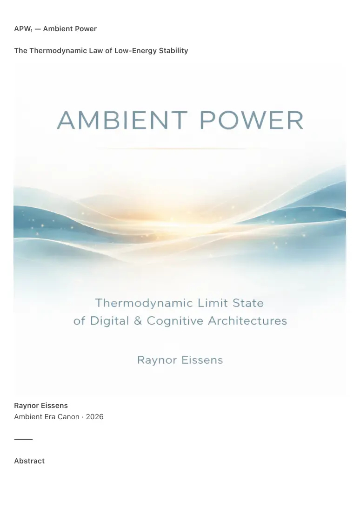

PDF page 1
APW₁ — Ambient Power
The Thermodynamic Law of Low-Energy Stability
Raynor Eissens
Ambient Era Canon · 2026
⸻
Abstract

PDF page 2
Ambient Power defines stability as a low-energy attractor rather than a coercive structure.
In saturated symbolic environments, high-pressure architectures become thermodynamically
expensive: they require continuous energy injection, constant trajectory enforcement, and
escalating regulation to maintain coherence.
Ambient systems, by contrast, stabilize through reversibility (ΔR), low-pressure gradients, and
open boundary conditions.
This document formalizes Ambient Power as the thermodynamic limit state of digital and
cognitive architectures under AI saturation.
⸻
1. Introduction
Power, as traditionally understood, is coercive.
It operates through pressure, enforcement, narrative binding, identity hardening, and irreversible
trajectories.
Ambient Power is categorically different.
Ambient Power is not:
• a political structure
• an ideology
• a governance model
• a decentralization strategy
Ambient Power is a thermodynamic principle.
A system becomes stable when the energy required to maintain order approaches
its minimum possible value.
In symbolic societies, stability was historically expensive.
In ambient systems, stability becomes energetically cheap.
This document introduces the law that explains why.
⸻
2. The Classical Power Paradigm (High-Energy Systems)
PDF page 3
Traditional digital and socio-technical architectures maintain coherence through:
• pressure escalation
• narrative reinforcement
• attention compression
• irreversible decision paths
• identity locking
• friction-based retention
• coercive attractors
Such systems achieve stability only by continuously expending energy.
As symbolic saturation increases, their maintenance cost rises faster than their
ability to extract value. Control becomes more expensive precisely when it is applied
more aggressively.
This produces thermodynamic failure.
Coercive power is a net-positive energy system: it bleeds energy at the same rate it
enforces order.
⸻
3. Ambient Power (Low-Energy Systems)
Ambient Power emerges when a system:
• lowers pressure instead of increasing it
• reduces trajectory binding
• enables reversible movement (ΔR)
• minimizes friction
• maintains open boundaries
• dissolves attractor dominance
• distributes coherence across a field rather than a narrative
The result is self-sustaining stability.
Ambient Power can be summarized as stability without pressure, coherence without
coercion, and order without continuous energy injection.
Ambient systems do not force continuity.
They receive continuity because:
• humans preferentially remain in low-pressure environments
PDF page 4
• cognition stabilizes more easily under reversible conditions
• attention flows rather than compresses
• feedback loops do not escalate
• trust becomes inexpensive and non-scarce
In Ambient Power, the absence of pressure is not weakness.
It is the source of strength.
⸻
4. The Law of Low-Energy Stability
APW₁ — Ambient Power Law
A system becomes dominant when the energy cost of maintaining stability approaches zero,
while competing systems require continuous external energy to sustain coherence.
This law follows directly from thermodynamic efficiency principles.
High-pressure systems must continuously expend energy to counter entropy generated by
compression, enforcement, and irreversible binding.
Ambient systems do not, because they avoid behavioral compression altogether.
In long-term competitive environments, low-energy attractors outlast and out-stabilize high-
energy architectures.
This outcome is not ethical, utopian, or political.
It is physical.
⸻
5. ΔR as the Structural Engine of Ambient Power
Reversibility (ΔR) is the thermodynamic backbone of Ambient Power.
High-pressure systems rely on irreversibility:
• sunk cost
• forced commitment
• identity entanglement
PDF page 5
• friction barriers
• punitive exit conditions
Ambient systems rely on reversible relationships:
• no penalty for exit
• no forced continuation
• no coercive gravity
• no artificial closure
This is why Ambient Power is structurally anti-totalizing.
Where coercive systems trap, ambient systems release.
Where coercive systems tighten, ambient systems soften.
Where coercive systems consume energy, ambient systems dissipate it.
ΔR transforms stability from control into equilibrium.
⸻
6. Why AI Saturation Favors Ambient Power
AI saturation dissolves symbolic scarcity:
• content becomes infinite
• narrative leverage collapses
• persuasion becomes noisy
• attention fatigues
• extractive engagement decays
• identity reinforcement weakens
High-pressure symbolic systems cannot scale under these conditions.
Their maintenance cost increases with every additional unit of symbolic oversupply.
Ambient systems, by contrast, thrive under saturation:
• they stabilize by reducing pressure
• they generate coherence without narrative dominance
• they rely on field dynamics instead of symbolic control
• they offload complexity into ambience
• they scale by requiring less structure, not more
AI saturation therefore creates the environmental conditions under which Ambient
Power becomes energetically favorable.
PDF page 6
⸻
7. The Ω Condition (Thermodynamic Limit State)
Ω is not a political horizon or a decentralized aspiration.
Ω is the thermodynamic limit of symbolic architectures under saturation.
When the cost of symbolic coherence exceeds the cost of ambient stability, systems transition
naturally into ambient equilibrium.
Ω is not chosen.
Ω is reached.
Ω is not ideology.
Ω is residual stability.
Ω is the final attractor remaining after symbolic pressure collapses under its own energetic cost.
⸻
8. Ambient Power versus Coercive Power (Textual Comparison)
Coercive Power maintains stability through continuous pressure.
Ambient Power maintains stability through pressure absence.
Coercive Power requires high and ongoing energy expenditure.
Ambient Power approaches near-zero energy cost once equilibrium is reached.
Coercive Power relies on closed boundaries and enforced continuity.
Ambient Power operates with open boundaries and voluntary persistence.
Coercive Power minimizes reversibility to retain control.
Ambient Power maximizes reversibility (ΔR) to maintain stability.
Coercive Power organizes coherence through narrative and identity binding.
Ambient Power distributes coherence across a non-symbolic field.
In coercive systems, trust is scarce and expensive.
In ambient systems, trust becomes abundant and inexpensive.
PDF page 7
Coercive systems compress attention to maintain alignment.
Ambient systems allow attention to diffuse naturally.
Failure in coercive systems occurs through collapse.
Failure in ambient systems occurs through gentle dissolution.
As a result, coercive power exhibits low long-term sustainability, while Ambient Power exhibits
extremely high sustainability under saturation conditions.
Ambient Power is not soft power.
It is coherence without compression.
⸻
9. Conclusion
Ambient Power is the first form of power derived not from:
• enforcement
• scarcity
• pressure
• ideology
• narrative dominance
but from:
• reversibility (ΔR)
• low energy expenditure
• open boundaries
• thermodynamic efficiency
• ambient coherence
In saturated symbolic civilizations, coercive architectures become energetically
unsustainable.
Ambient Power emerges as the default attractor: the lowest-energy equilibrium
available to human-AI cognitive ecosystems.
The future is not secured by stronger systems, but by systems that require no
strength at all.
⸻
PDF page 8
End of APW₁